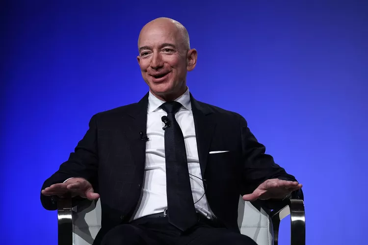
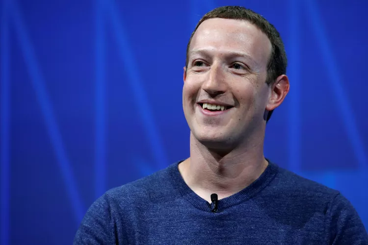
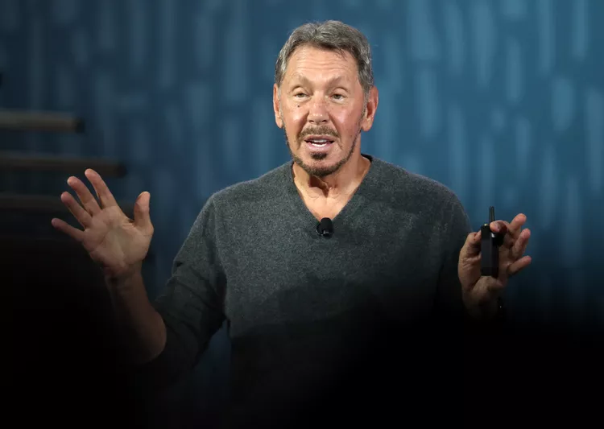
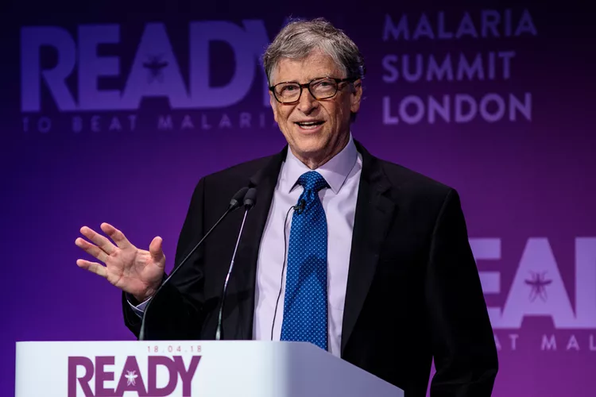

Space Exploration Technologies Ownership Stake (Private): 42% ($136 billion)
Other Assets: The Boring Company ($3.33 billion private asset), Neuralink ($2.07 billion private asset), XAI ($20.1 billion private asset)
2. Jeff Bezos
Founder and Executive Chair: Amazon (AMZN)
Age: 61
Residence: United States
Founder and Executive Chair: Amazon (AMZN)
Net Worth: $212 billion
Amazon Ownership Stake: 8.6% ($173 billion)
Other Assets: Blue Origin ($15 billion private asset), The Washington Post ($250 million private asset), Koru ($500 million private asset), and $23 billion in cash
3. Mark Zuckerberg
Facebook CEO Mark Zuckerberg.
Age: 40
Residence: United States
CEO and Chair: Meta Platforms (META)
Net Worth: $203 billion
Meta Platforms Ownership Stake: 13% ($196 billion)
Other Assets: $6.35 billion in cash
4. Larry Ellison
Co-founder, Chair, and CTO: Oracle (ORCL)
Age: 80
Residence: United States
Co-founder, Chair, and CTO: Oracle (ORCL)
Net Worth: $168 billion
Oracle Ownership Stake: 41% ($126 billion)
Other Assets: Tesla equity ($12.6 billion public asset), $28.7 billion in cash
5. Bill Gates
Co-founder: Microsoft (MSFT)
Age: 69
Residence: United States
Co-founder: Microsoft (MSFT)
Net Worth: $166 billion
Microsoft Ownership Stake: 1% ($27.5 billion)
Other Assets: Billions in multiple other companies held through a holding company, Cascade Investment, and $78.7 billion in cash